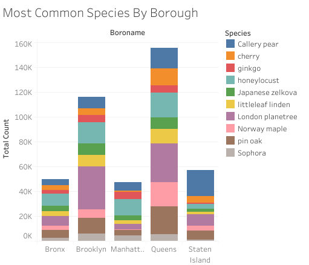
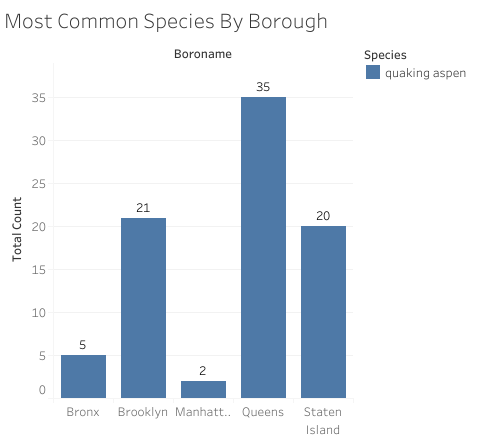
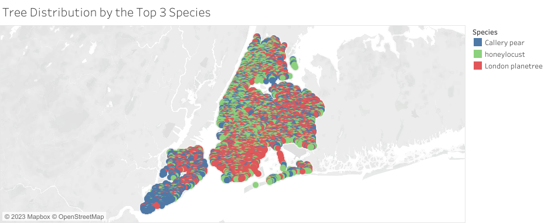
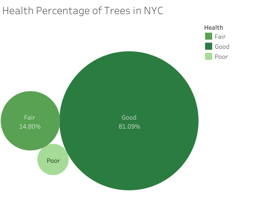

Introduction
This project focuses on the exploration of the New York City Tree Census dataset from 2015 to gain insights into the city's urban tree population. By utilizing SQL for data analysis and Tableau for visualization, the project aims to uncover interesting patterns, distribution, and health conditions of the trees across the city's boroughs.
Project Overview
-
Data Source: The project utilizes the New York City Tree Census dataset found in the google's bigquery public data market, collected in 2015, which includes detailed information on tree species, health, status, and location across the city's five boroughs.
-
Tools Used: SQL was employed for data querying and analysis, while Tableau was utilized for data visualization and creating interactive maps.
-
Objectives: The primary objectives of this project are to analyze the distribution of tree species, examine health conditions, explore borough-wise variations, and visualize the findings on interactive maps. The secondary objective is to find ideal locations for certain occasions like taking wonderful pictures, suitable trees for kids to play, harmful areas to avoid etc
The tableau visualization of this project can be found here
Key Findings
The Basics
-
There are exactly 683,788 in New York as of 2015 and exactly 101390 locations in which this trees are found. The dataset provides the location of each tree including it's own longitude and latitud(yes, there are no null values in that regards),address,borough and zipcode which were utilized in this project.
-
There are a total of 132 distinct species of trees in New York
Analysis of the dataset revealed the most common tree species in New York City is "London planetree" accounting for about 12.75% of the total trees in NYC followed by Honey locust,Callery pear and Pin oak which all ranges from 7% to 9% each. However the rarest species in NYC is "Virginia pine" with just 10 of those in the state. But even quaking aspen which are widely regarded as beautiful trees, known for there uniqueness appearance and striking features are quite rare in NYC with just 83(with 35 in Queens and 20 and 21 in State Island and Brooklyn respectively) of those in the whole of NYC.
  From the above figures, we can find out which of the species of the tree is the most popular in each borough. Queens: London Planetree Brooklyn: London Planetree State Island: Callery pear Manhattan: Honey Locust Bronx: Honey Locust It is remarkable that all the borough contains all most all the 132 tree species in the state. In fact only Manhattan(128) and State Island(131) have less than 132. Talk about diversity!
Health Conditions
The health assessment of trees showcased the overall well-being of the urban forest, providing insights into the proportions of trees in good, fair, and poor health conditions. 81.09% of the trees i NYC are in Good health condition while only 14.80% are in Fair health conditions and the remaining 4.11% are in Poor condtion. So as far as taking care of the trees is concern, not bad!! Note: This excludes the null values.
Queens have the highest number of poor trees with about 9,417 trees being bad. But this can be because Queens account for the highest number of trees in NYC that's why it also have the highest number of Good trees.
Tree DiameterDepending on the ocassion, tree diameter matters. The tree diameters in this dataset are measured at 137cm above the ground. I've analysed the tree diameter based on borough/county so that one can narrow their preferences easily.

Also going by the zipcodes
The bluest part on the above map corresponds to the zipcode of 11234. By looking it up in www.unitedstateszipcodes.org, it is Kings County in Brooklyn. There you can get trees that have average diameter of 38.18 inches.
Perfect for the occasionJapanese Maple trees are perfect for taking pictures. They are known for their vibrant purple-blue flowers.
This beauty can be found largley in Queens with almost 760 of them there. However, if you are one kids, then surely you like them to play. The Weeping willow tree provides the perfect opportunity to be creative and play with their imagination. They have long, flexible branches that can be easily manipulated and used for imaginative play. Children can enjoy swinging from the branches or creating forts and hideouts beneath the canopy of these trees.
These trees can be found in Brooklyn and Queens.
Conclusion
Through this project, a deeper understanding of New York City's urban tree population, their distribution, and health conditions has been gained. The utilization of SQL for data analysis and Tableau for visualization allowed for effective exploration and presentation of the insights derived from the dataset.